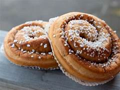

Klassisk Kanelbulle

Ingredienser
- 25 g jäst
- 75 g smör
- 2.5 dl mjölk
- 0.5 dl socker
- 1 krm salt
- 7 dl vetemjöl
- 1 tsk kardemumma
- 1 ägg för pensling
- Fyllning: 50 g smör, 1 dl socker, 2 msk kanel
Instruktioner
- Smula jästen i en bunke. Smält smöret i en kastrull, häll i mjölken och värm till fingervärme.
- Häll blandningen över jästen och rör tills den lösts upp. Tillsätt socker, salt och kardemumma.
- Arbeta in mjölet lite i taget tills degen blir smidig. Låt degen jäsa under bakduk i cirka 30 minuter.
- Kavla ut degen till en rektangel. Bred smör över degen och strö över socker och kanel.
- Rulla ihop degen och skär den i skivor. Lägg bullarna på en bakplåt och låt dem jäsa i ytterligare 30 minuter.
- Pensla bullarna med uppvispat ägg och grädda i 225°C i 8–10 minuter tills de är gyllenbruna.